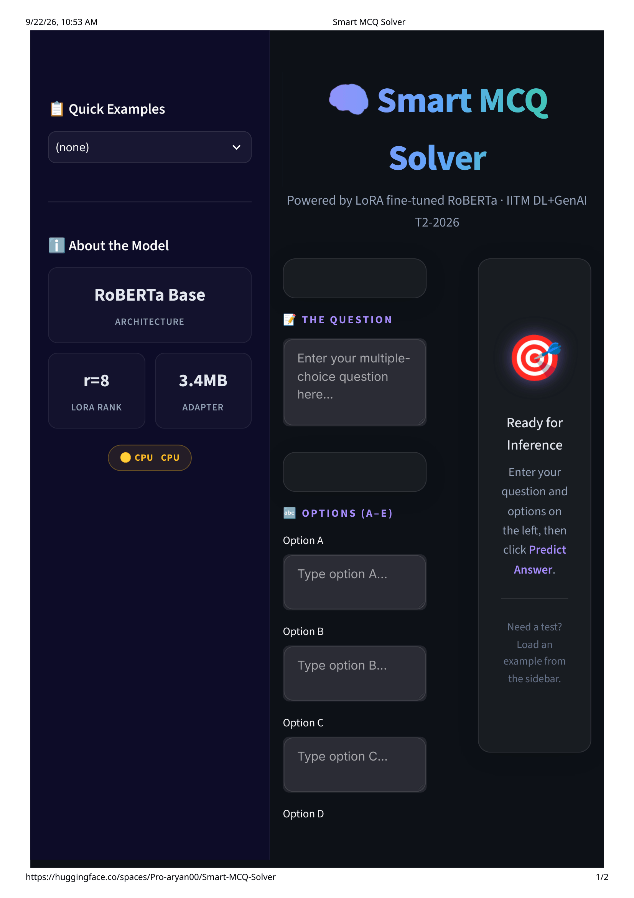

ranking system

Smart MCQ Solver
LoRA fine-tuned RoBERTa-base ranking pipeline, evolved through six milestones from TF-IDF to RAG.
0.753 MAP@3
3.4 MB adapter
stackPython · PyTorch · Transformers · PEFT/LoRA · Streamlit